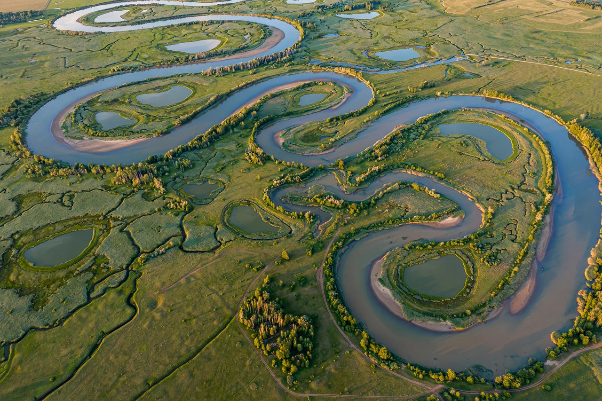

River

A river is a natural flowing watercourse, usually freshwater, flowing towards an ocean, sea, lake or another river. In some cases, a river flows into the ground or becomes dry at the end of its course without reaching another body of water. Small rivers can be referred to by names such as creek, brook, rivulet and rill.
Rivers are an essential part of the water cycle and have been fundamental to human civilisation, providing water, fertile floodplains, transport routes and power. The longest rivers in the world are the Nile and the Amazon, each roughly 6,500 to 6,700 kilometres long; which is longer is a matter of measurement and definition.
Course and features
A river begins at a source, which may be a spring, lake, glacier or the confluence of streams, and ends at a mouth, where it empties into a larger body of water, often forming a delta or estuary. Along its course it may pass through rapids and waterfalls, form meanders and oxbow lakes on floodplains, and gather water from tributaries throughout its drainage basin (catchment or watershed).
Human use
Rivers are used for drinking water, irrigation, navigation, hydroelectric power, industry, recreation and waste disposal. Major cities historically grew along rivers, and river valleys such as those of the Nile, Indus, Yellow River and Tigris-Euphrates were cradles of early civilisation. Dams and diversions have heavily modified many of the world's great rivers.